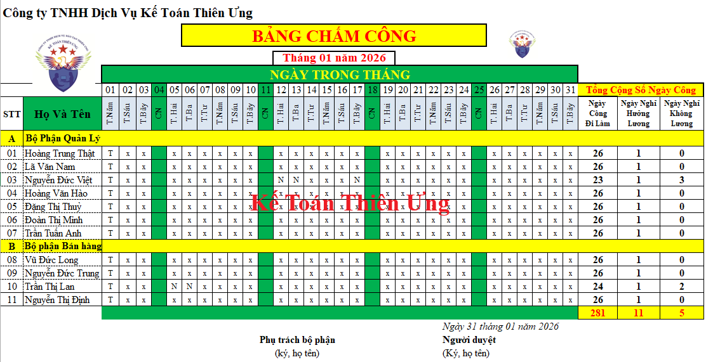

Mẫu bảng chấm công theo Thông tư 99 và Thông tư 133 mới nhất. Đây là mẫu bảng chấm công trên Excel năm 2026 do Kế toán Diệu Tâm thiết kế theo đúng lịch năm 2026 đầy đủ 12 tháng, có sẵn các công thức tính Tổng ngày công để gửi tặng các bạn.

(Giao diện mẫu Bảng chấm trên Excel 2025)
Chú ý: Trong mẫu bảng chấm trên Excel này Kế toán Diệu Tâm đã đặt sẵn các công thức, và những chú ý ở phần cuối trong Excel, các bạn nhớ đọc kỹ và thực hiện nhé.
| Ký Hiệu Chấm Công | |
| Đi Làm | X |
| Đi Làm Nửa Ngày | X/2 |
| Nghỉ | N |
| Nghỉ Hưởng Lương | T |
| Nghỉ Bù | NB |
Ghi chú: Tháng 01 năm 2026 có tổng số 31 ngày, trong đó:
+ Có 4 ngày chủ nhật - Người lao động được nghỉ hàng tuần
+ Ngày 01/01 là ngày Tết dương lịch - Người lao động nghỉ nhưng vẫn được hưởng lương
1. Mục đích lập Bảng chấm công:
- Bảng chấm công dùng để theo dõi ngày công thực tế làm việc, nghỉ việc, nghỉ hưởng BHXH, ... để có căn cứ tính trả lương, bảo hiểm xã hội trả thay lương cho từng người và quản lý lao động trong đơn vị.
2. Phương pháp và trách nhiệm ghi:
- Mỗi bộ phận (phòng, ban, tổ, nhóm…) phải lập bảng chấm công hàng tháng.
- Hàng ngày tổ trưởng (Trưởng ban, phòng, nhóm,...) hoặc người được ủy quyền căn cứ vào tình hình thực tế của bộ phận mình để chấm công cho từng người trong ngày, ghi vào ngày tương ứng trong các cột từ cột 1 đến cột 31 (tức là từ ngày 1 đến ngày 31) theo các ký hiệu quy định trong chứng từ.
- Cuối tháng, người chấm công và người phụ trách bộ phận ký vào Bảng chấm công và chuyển Bảng chấm công cùng các chứng từ liên quan như Giấy chứng nhận nghỉ việc hưởng BHXH, giấy xin nghỉ việc không hưởng lương,... về bộ phận kế toán kiểm tra, đối chiếu qui ra công để tính lương và bảo hiểm xã hội.
- Bảng chấm công được lưu tại phòng (ban, tổ,…) kế toán cùng các chứng từ có liên quan.
3. Phương pháp chấm công:
Tùy thuộc vào điều kiện công tác và trình độ kế toán tại đơn vị để sử dụng 1 trong các phương pháp chấm công sau:
- Chấm công ngày: Mỗi khi người lao động làm việc tại đơn vị hoặc làm việc khác như hội nghị, họp,... thì mỗi ngày dùng một ký hiệu để chấm công cho ngày đó.
Cần chú ý 2 trường hợp:
+ Nếu trong ngày, người lao động làm 2 việc có thời gian khác nhau thì chấm công theo ký hiệu của công việc chiếm nhiều thời gian nhất. Ví dụ người lao động A trong ngày họp 5 giờ làm lương thời gian 3 giờ thì cả ngày hôm đó chấm “H” Hội họp.
+ Nếu trong ngày, người lao động làm 2 việc có thời gian bằng nhau thì chấm công theo ký hiệu của công việc diễn ra trước.
- Chấm công theo giờ:
Trong ngày người lao động làm bao nhiêu công việc thì chấm công theo các ký hiệu đã quy định và ghi số giờ công thực hiện công việc đó bên cạnh ký hiệu tương ứng.
- Chấm công nghỉ bù:
Nghỉ bù chỉ áp dụng trong trường hợp làm thêm giờ hưởng lương thời gian nhưng không thanh toán lương làm thêm, do đó khi người lao động nghỉ bù thì chấm "NB" và vẫn tính trả lương thời gian.
------------------------------------------------------------------------------------------------------
Các bạn muốn tải (download) Mẫu bảng chấm công trên Excel năm 2026 mới nhất trên đây về để tham khảo và sử dụng thì có thể gửi mail về địa chỉ mail: ketoandieutam@gmail.com => Kế Toán Diệu Tâm sẽ gửi lại Mẫu bảng chấm công trên Excel năm 2026 mới nhất này cho các bạn
----------------------------------------------------------------------------------------
Lưu ý:
+ Trong danh mục mẫu biểu chứng từ kế toán được ban hành kèm theo Thông tư 99/2025/TT-BTC thì không có mẫu bảng chấm công
+ Thông tư 133 thì có mẫu. Các bạn xem tại đây:
----------------------------------------------------------------------------------------------------
Công việc cuối tháng: - Dựa vào bảng chấm công đến cuối tháng các bạn tiến hành tính lương cho nhân viên trong doanh nghiệp.
Chi tiết các bạn xem thêm tại đây:
--------------------------------------------------------------------------------------------
Các bạn muốn học thực hành làm kế toán tổng hợp trên chứng từ thực tế, thực hành xử lý các nghiệp vụ hạch toán, tính thuế, kê khai thuế, tính lương, trích khấu hao....lập báo cáo tài chính, quyết toán thuế cuối năm ... thì có thể tham gia: Lớp học kế toán thực hành thực tế tại Kế toán Diệu Tâm
__________________________________________________